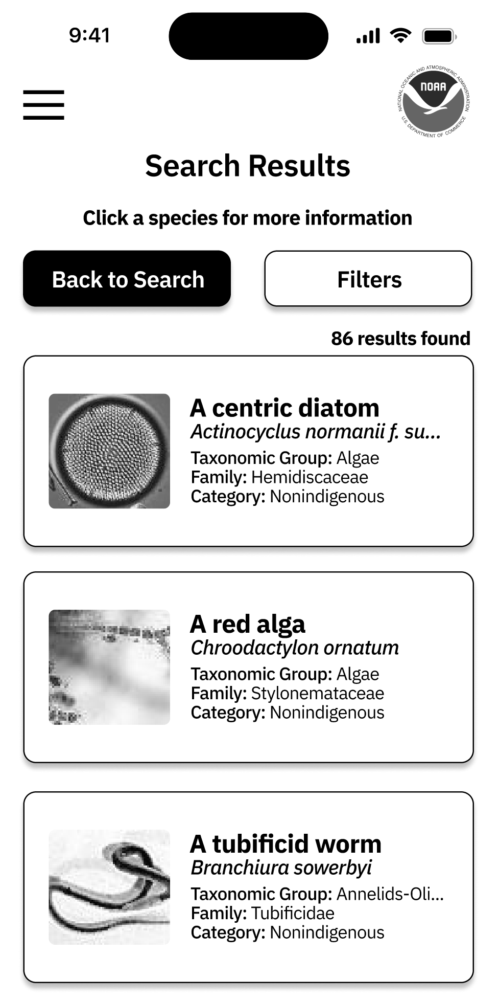

NOAA GLANSIS Web App Redesign
Worked directly with GLANSIS to evaluate research, wireframe and prototype black and white designs, and received feedback to improve further iterations.


Summary
This project aimed to redesign a specific feature on the GLANSIS website in collaboration with the National Oceanic and Atmospheric Association (NOAA), while receiving feedback from students, professors, and NOAA representatives. This individual class project included checkpoints for mobile and web app designs, incorporating feedback for continuous improvement.
Problem Statement: Over 30 million people in the Great Lakes Basin are impacted by often unnoticed invasive species, leading to the uninhibited presence of non-indigenous species across various groups. This poses a significant threat to the resources of indigenous species in the region.
Project Duration: September 2023-December 2023
Mobile Designs
The first step in the process for this project was the mobile designs. Currently, the NOAA GLANSIS website is not very mobile accessible, so making a mobile app version was very intriguing and new. The flow of the screens I would be redesigning involved the Home page, Species List Generator, Search Results page, and Species Profile page, and I also worked on the FAQ page.
Throughout this process, it was very fun to compare how my classmates and I thought differently about this project. The uses of background imaging, image information cards, and lack of color made everyone's designs unique. While I found it difficult to work without color sometimes, it was also very refreshing. Check out a sample of the finished product -->


Web App Designs
The second step in the process was working to translate my mobile designs into a web app version accessible on desktop. While I decided to keep a lot of the orginal design ideas, there were a couple changes to be made between mobile and desktop. Moving the hamburger menu into a navigation bar being the biggest of those.
Moving through this transition, I noticed what it was like to manually create media queries between checkpoints for websites. Having had experience with doing so in CSS, it was fun to try to translate everything by hand on Figma. Check out some more pictures of the translated web app!